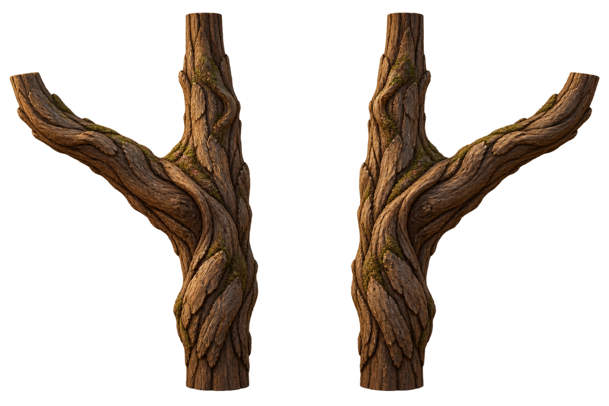
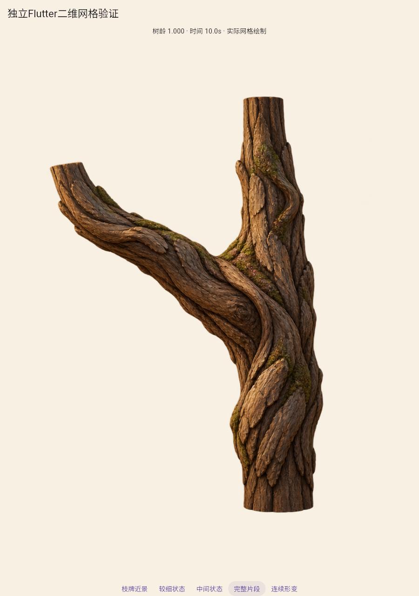
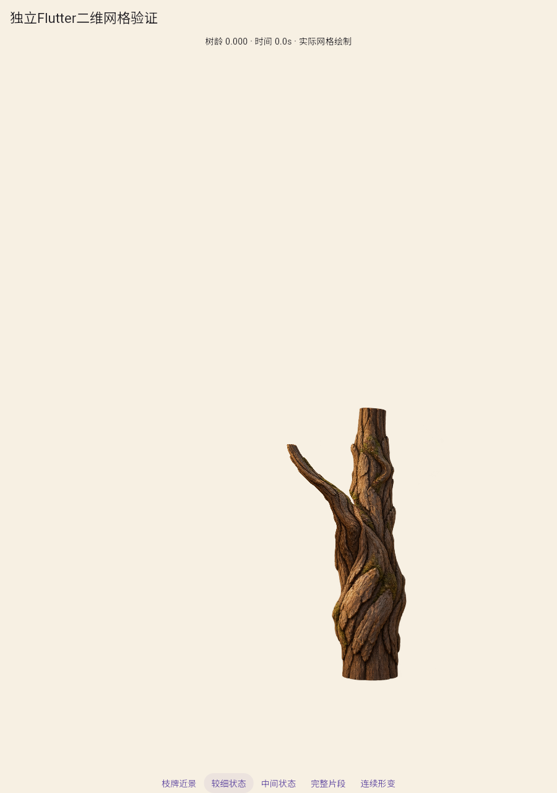
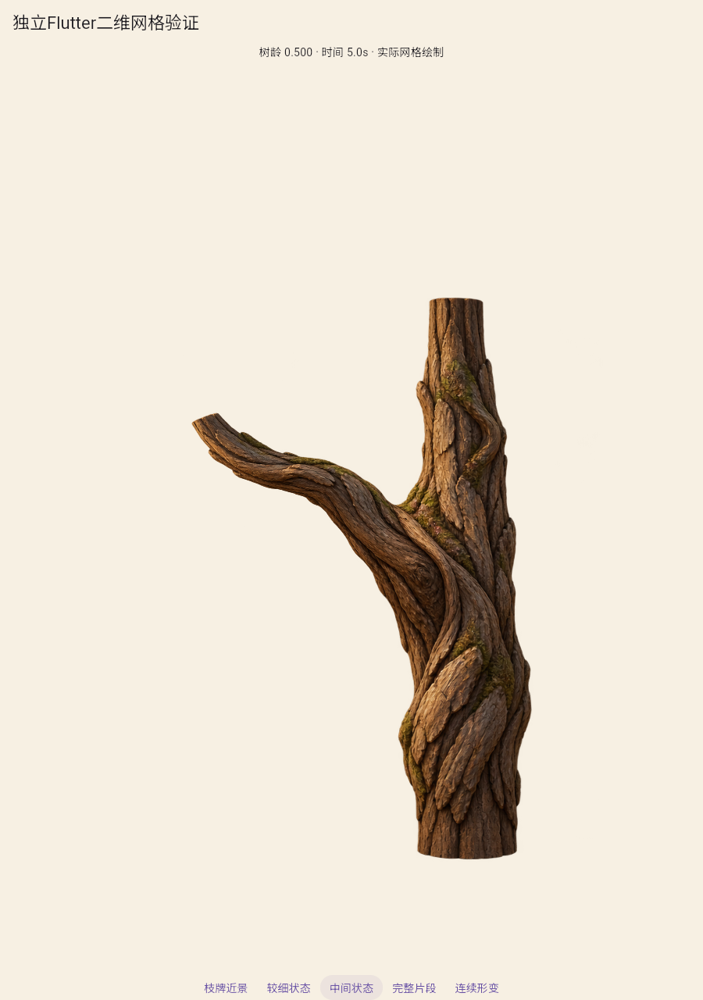
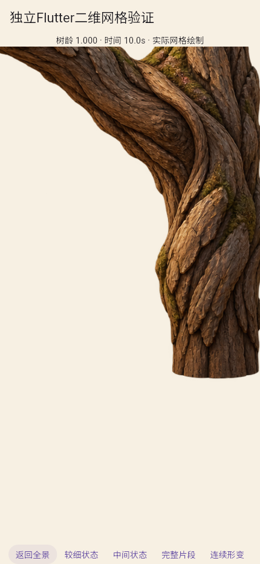
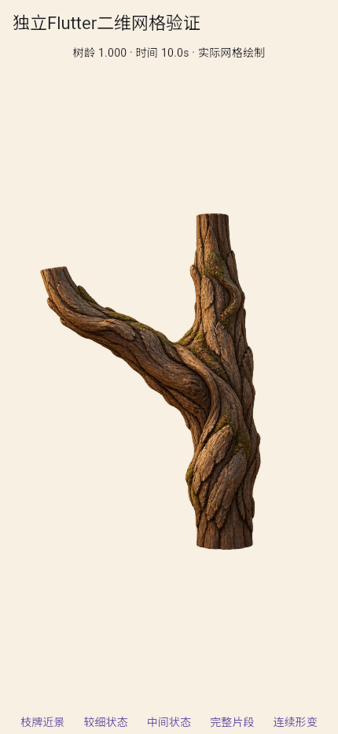

局部插画分叉：真实骨骼网格验证
只是局部材质与形变方法验证，不含根或叶冠，不是完整树苗/整树；A2未通过。

局部图源，原透明通道保留；本轮只使用左格。

实际网格绘制，保留插画中的体积和光照。

干和侧枝分别改变长度、粗度，仍保留老树皮，不能称为幼苗。

同一UV与图像，真实顶点插值，没有阶段图切换。

接合截口、大幅压缩与多段拼接仍需检验。

浅色背景未见明显黑底，不代表所有背景或真机通过。
局部连续形变
101个实际Flutter状态，约10.1秒；编码10fps不代表运行帧率。
实际结果与源码哈希 · 源生成结果 · 旧分支回归 · 局部结论和对接出口